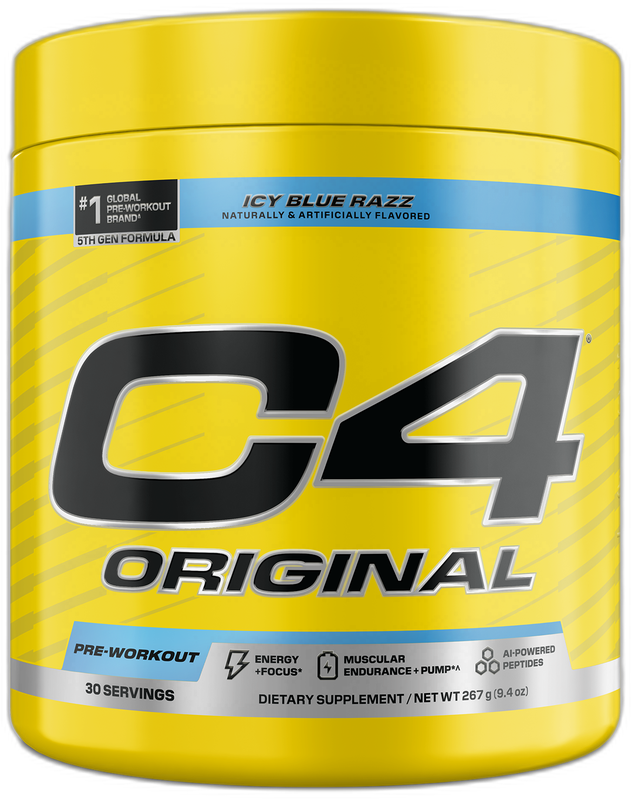

Product imagery supplied by the retailer. Packaging may vary — verify the Supplement Facts panel on the container you receive.
Cellucor
C4 Original
Our analysis — editorial take, not from the label
The gateway pre-workout grew up: the 2024 fifth-generation formula raised caffeine to 200 mg, roughly doubled the scoop, and dropped the proprietary blend entirely. Still cheap, still everywhere — now with every dose on the label.
- Caffeine
- 200 mg
- Citrulline
- 2.4 g
- Beta-alanine
- 2 g
- Servings
- 30
- Price tier
- Budget
Price tier: Budget · relative cost per full serving across this database
We don't list dollar prices — they change daily and go stale. Check the live price instead:
View current price Compare all 38 formulasAffiliate link — Scoop Sense may earn a commission at no additional cost to you.
Classic candy-style flavors plus licensed collabs; artificially sweetened and dyed; sold almost everywhere.
Label verified: July 2026 · View supplement facts image
Label data
Per full serving · 30 servings per container · from the manufacturer's panel
| Caffeine | 200 mg |
| CarnoSyn Beta-Alanine | 2 g |
| Velox (L-Citrulline + L-Arginine) | 2.4 g |
| Creatine Nitrate (NO3-T) | 1 g |
| Proprietary blend | No |
Primary label source: Cellucor — official product page · verified July 2026
Product details
What is Cellucor C4 Original?
The gateway pre-workout grew up: the 2024 fifth-generation formula raised caffeine to 200 mg, roughly doubled the scoop, and dropped the proprietary blend entirely. Still cheap, still everywhere — now with every dose on the label. It sits in the moderate stim tier of the Scoop Sense database, which spans 0–400 mg of caffeine per serving. Everything on this page comes from the manufacturer's supplement facts panel as of July 2026 — never from the marketing page.
Key ingredients & studied doses
- CarnoSyn Beta-Alanine · 2 g. Below the 3.2–6.4 g/day range used in beta-alanine research — mild tingles still possible.
- Velox (L-Citrulline + L-Arginine) · 2.4 g. A fully disclosed 1.2 g / 1.2 g split — well under the 6–8 g used in citrulline studies.
- Creatine Nitrate (NO3-T) · 1 g. Well below the 3–5 g standard used in creatine research.
Cautions
- Key doses sit under studied ranges — gentler, but less backed
- The label says not to use it continuously for more than 8 weeks
- Old 150 mg-caffeine stock still circulates — look for the Velox and PeptiPump rows to confirm the current label
Flavors & sweetener
Classic candy-style flavors plus licensed collabs; artificially sweetened and dyed; sold almost everywhere.
Who it's best for
Most regular gym-goers — the caffeine dose is in the range of about two cups of coffee. A reasonable pick when cost per serving matters. Derived from the label figures above — not medical advice.
How we log this label
Every entry is built the same way: we read the current supplement facts panel, log each disclosed dose, compare it against the amounts used in published research, flag proprietary blends, and state the cautions plainly. The full methodology explains each step.
Common questions about Cellucor C4 Original
How much caffeine is in Cellucor C4 Original?
200 mg per full labeled serving — roughly 2.1 small cups of coffee. Within the Scoop Sense database (0–400 mg per serving) that places it in the moderate stim tier. The FDA cites about 400 mg per day as an amount generally not associated with negative effects in healthy adults, and coffee, tea, and energy drinks count toward the same total.
Why does Cellucor C4 Original make my skin tingle?
The 2 g of beta-alanine. The prickling (paresthesia) in the face, neck, and hands is generally considered harmless, is dose-dependent, and fades on its own — typically within about an hour. Most beta-alanine studies use 3.2 g per day.
Does Cellucor C4 Original disclose every dose?
Yes — the label lists an individual amount for each ingredient, with no proprietary blends. That is what the "label fully disclosed" tag on Scoop Sense means, and it is what lets each dose be compared against the amounts used in published research.
Reviews
Scoop Sense doesn't collect user reviews, and we won't invent them. Our editorial read: The gateway pre-workout grew up: the 2024 fifth-generation formula raised caffeine to 200 mg, roughly doubled the scoop, and dropped the proprietary blend entirely. Still cheap, still everywhere — now with every dose on the label.
Read customer reviews on AmazonAffiliate link — Scoop Sense may earn a commission at no additional cost to you.